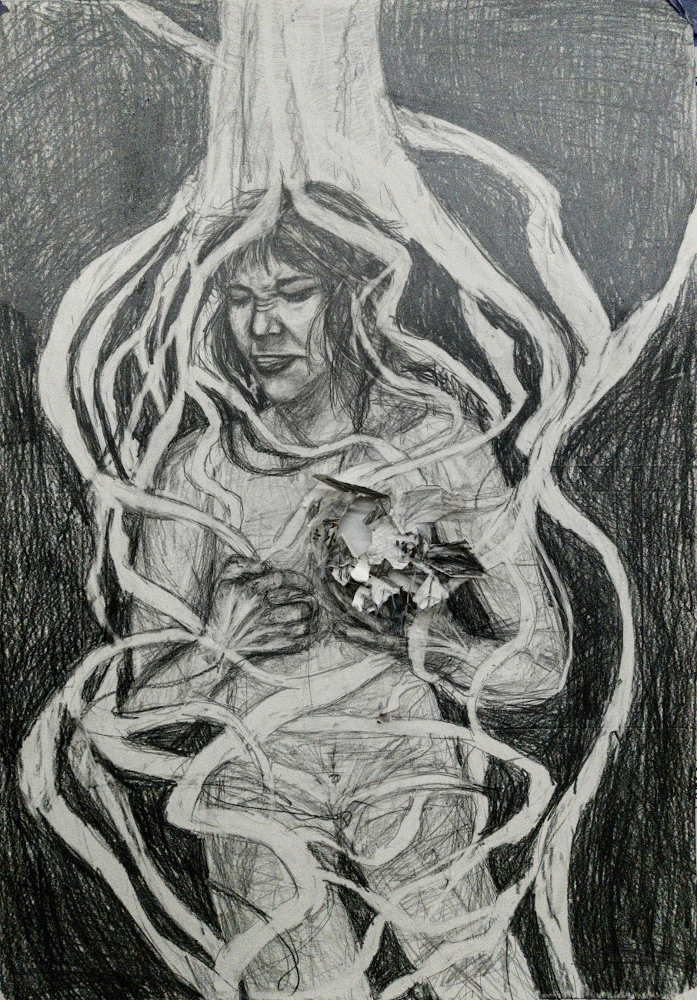
Printmaking
and drawing.
Prints and drawings, from experimental approaches to finished works.
Drawing
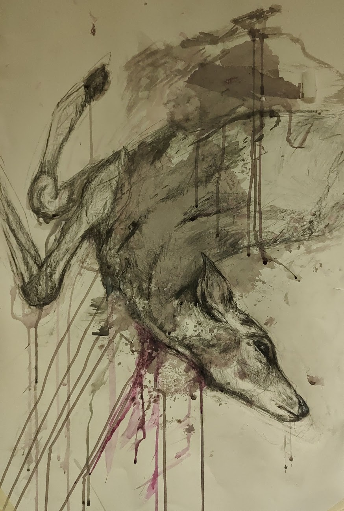
Decay.
Printmaking
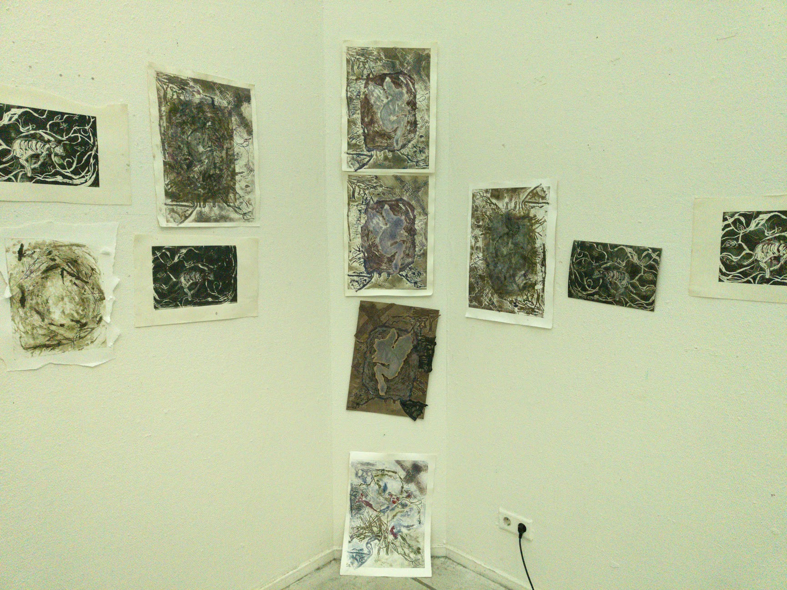
Safety Nest · installation view
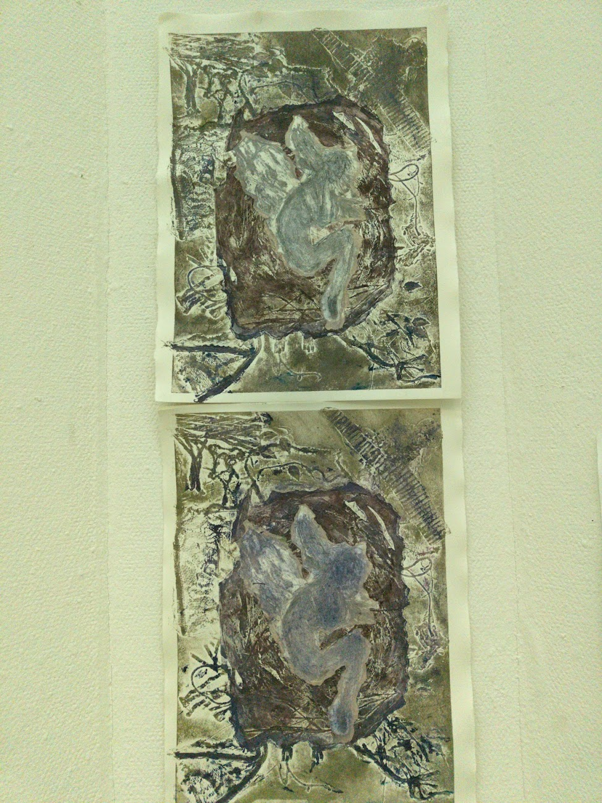
Safety Nest · Closeup
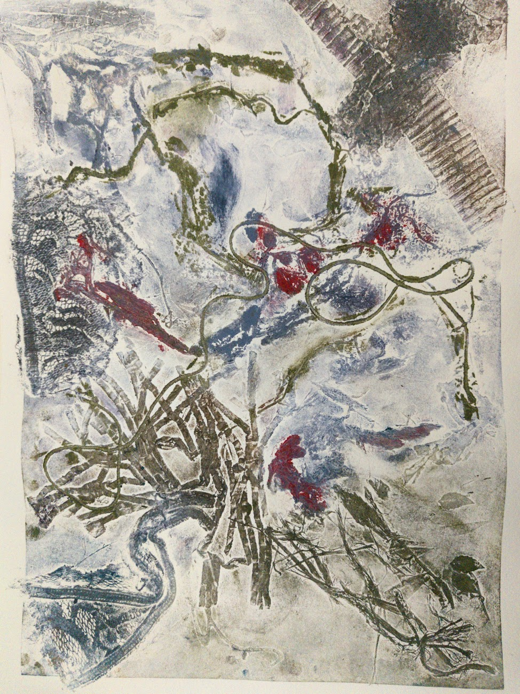
Experimental collagraph print
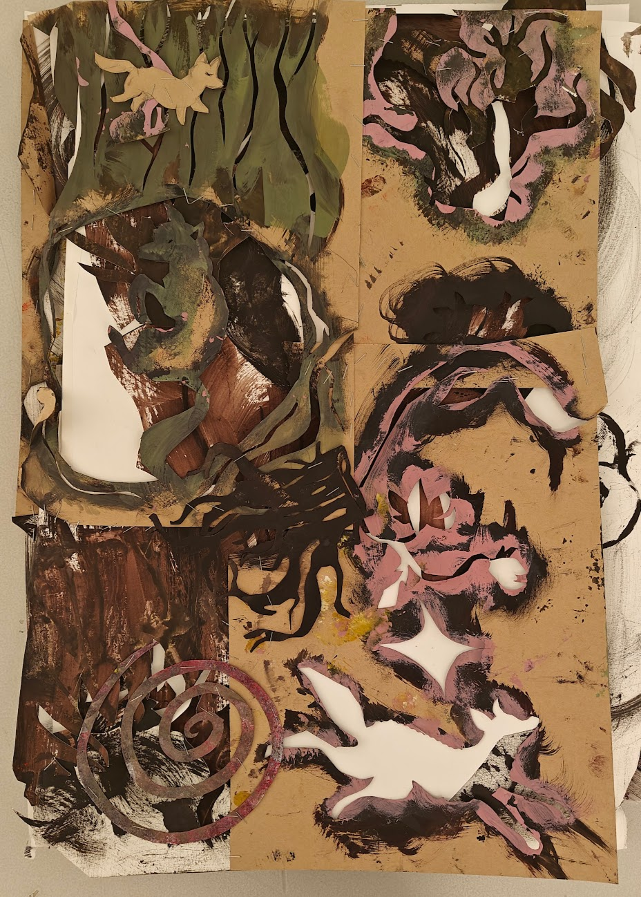
Labyrinthic Forest · Cover
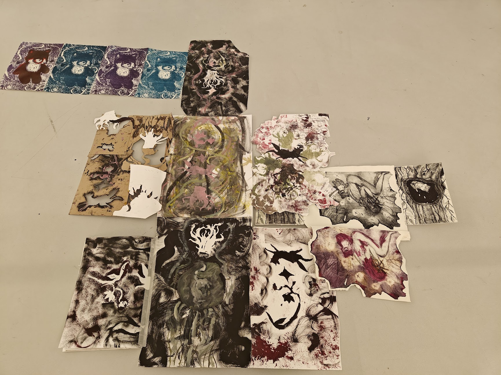
Labyrinthic Forest · Unfolded
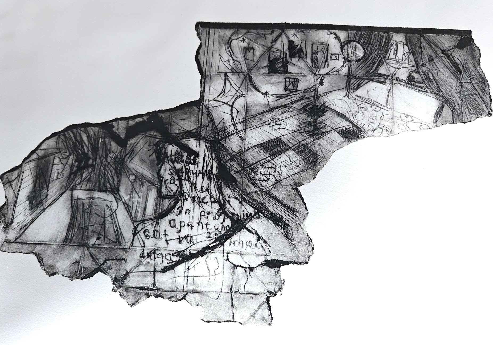
Usa casei tale
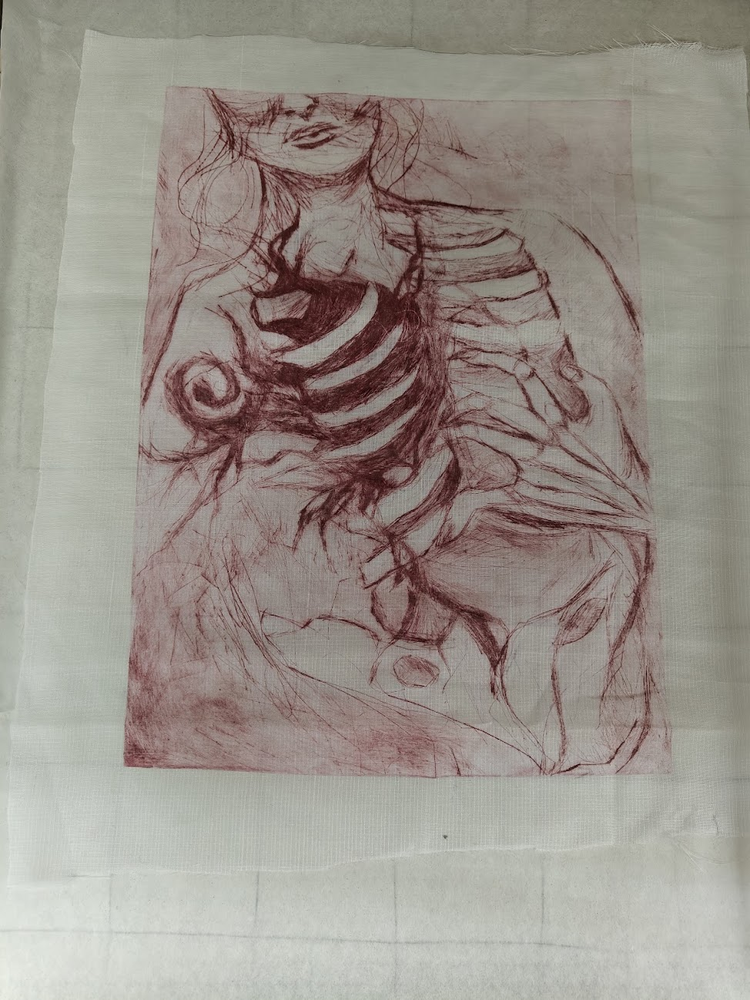

It's trying to escape.
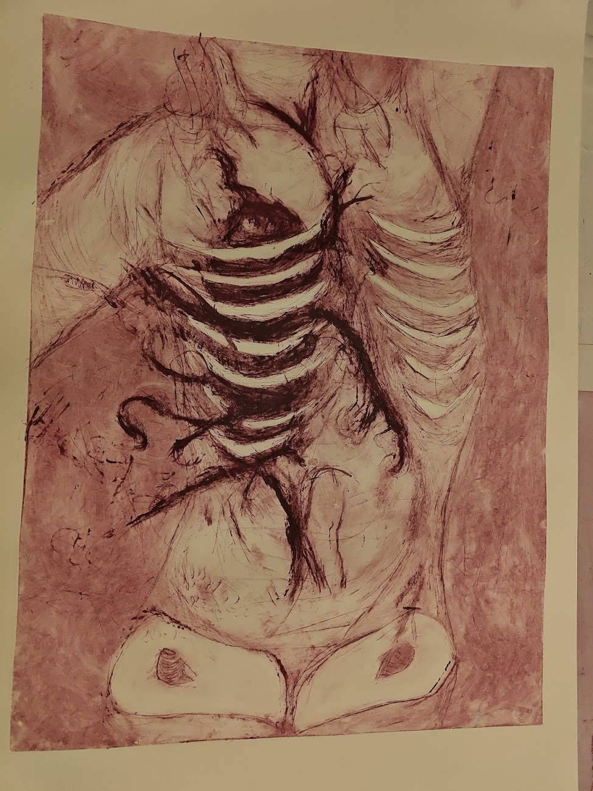
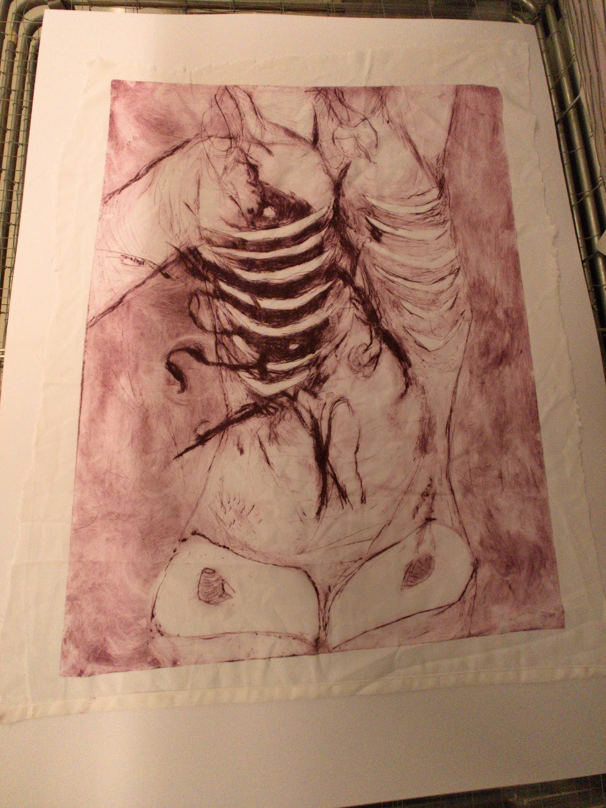